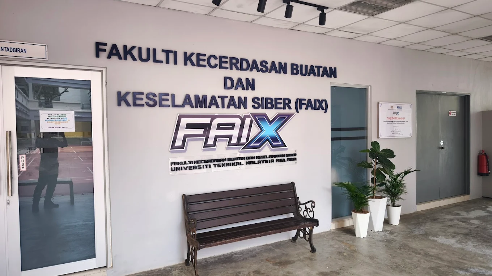

Academic History
Building a foundation in predictive models, logic systems, and technical troubleshooting.

Universiti Teknikal Malaysia Melaka (UTeM)
Degree: Bachelor of Computer Science (Artificial Intelligence) with Honours
Expected Graduation: 2027
CGPA: 3.64
My academic focus within the Artificial Intelligence (BAXI) program heavily emphasizes the intersection of applied mathematics and practical software development. I specialize in building intelligent systems capable of processing complex human inputs and forecasting data trends. My coursework requires rigorous analytical thinking, culminating in major academic milestones like developing a Fuzzy Logic Campus Cafeteria Rating System and engineering a Machine Learning Unemployment Predictor using ElasticNet.
Politeknik Ungku Omar (PUO)
Diploma: Diploma in Information Technology (Digital Technology)
Year: June 2018 – December 2020
CGPA: 3.65
My diploma studies focused heavily on software development, building a robust foundation in object-oriented programming (C++, Java), web design technologies (HTML), and database design. This period significantly sharpened my coding fundamentals, human-computer interaction principles, and problem-solving skills, allowing me to comfortably transition into more advanced intelligent systems architecture at the degree level.
Kolej Komuniti Bagan Datuk
Certificate: Sijil Sistem Komputer dan Sokongan
Year Graduated: March 2017
CGPA: 3.50 (Kepujian)
My studies at Kolej Komuniti established my core foundation in programming logic, digital systems, and computer network configuration. It was during this hands-on period that I developed a strong interest in software troubleshooting and system configuration, which naturally expanded into my current focus on performance optimization.
SMJK SAN MIN
Certificate: Sijil Pelajaran Malaysia (SPM)
Year Graduated: 2014
Completed core secondary education. To continually refine my foundational credentials alongside my current university workload, I am currently registered to sit for the SPM Ulangan (Bahasa Melayu) examination this July, demonstrating a commitment to continuous personal and academic improvement.